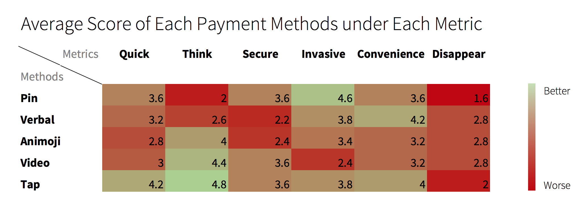

Spinning our wheels
The past two weeks we focused on the toughest and most constrained design space we've had yet. Last week we dialed into merchants and what they need. Explored various types of merchants we saw just how wide of an array a Point of Sale provider has to accommodate, and how varied small businesses are.
We did discuss a lot about what business value Mastercard can bring to merchants, how POS systems fit into the equation, the crushing realities of the physical space, and revisiting and reframing what our scope actually is. Eventually we realized we can't satisfy it all, and we just had to start making things. Do one small thing, do it well.
Narrow, narrow, narrow
We started out with grocery stores and fast food / coffee shops. We decided to focus down to just coffee shops for the prototype, since Starbucks has been a major observation site and testing ground for us.
Our chief constraint was that we don't want businesses to have to buy new hardware. It's easy to design a technology solution that tracks people and what they're buying - if you just add loads of cameras and sensors to the place. However, we identified this is the main reason Google Hands Free and Paypal have failed in the physical store: The capital costs of buying sensing gear for a POS system is too steep. Merchants just want something that works and is cheap. So this pushed us to have all the computing on the customers device.
5 Prototypes
We know the onboarding experience will be critical no matter what, and since we were trying to offload the computation to the customers device, we prototyped the onboarding experience (on a customers phone) and the ideal purchase flow (at the merchant's counter/POS) for five different authentication.
- Verbal - customer adds a customer name and orders using this name, "Hi, I'm Dan Smith."
- Video Raw - Much like the lemonade stand prototype, there's a raw video capture using facial recognition.
- Video Animoji - Facial recognition here as well but the customer doesn't see raw video and instead sees a live animoji of themselves
- Pincode - A basic 4-6 digit pin code the customer determines beforehand
- Phone touch - An NFC reader much like Apple Pay currently
Contextual Inquiry Research
While simultaneously developing the prototypes for each of these methods, two of us also went out on the town to 15 various coffee shops, from corporate chains to local indie shops, to observe and map the sequence of events, chart number of card transactions vs. cash, see app usage, and interview some folks. This ended up being a very productive morning of a quick contextual inquiry.
Some interesting takeaways:
- The sequence after ordering of pay and receive is highly variable based on if the order is simple enough. Drip coffee - they serve it to you and then ask you to pay. Double shot Latte - they'll take your money, and then you wait for them to make it.
- Cash vs. Card - Shadyside had much more cash usage, while Pitt and CMU had much more card.
- Starbucks app usage for rewards points is 49%, which seems extreme.
- Every barista we talked with said they recognized regulars, and had their orders memorized. Some will even start making the drink while seeing the customer walk across the street.

Testing
We tested with 5 participants from college to middle age. Here are the results of some basic questions we surveyed afterwards.
Conclusions
Some initial conclusions from this sprint and prototype testing:
Customization - Even among our small sample, all 5 prototypes were selected a preferred by different participants. This reinforces earlier ideas that no one method is ideal, and a variety of methods should be available to the user to select.
Multiple users per card, Multiple cards per user - A participant this round surfaced an issue we discussed in the spring of how does CA work for multiple users on the same card? Since it is very biometrically tied to an individual, would it be possible for a couple to share a card? Could it work on a corporate card with multiple users?
Physical Cards work very well - In the end, we've reified how convenient and solid physical cards are in a physical store. They actually work great. We've been using them for 70 years. Everyone knows how they work. They don't have to be charged. In short, they're great. If we think phone payments are a nice new step, it will be for some value add beyond convenience.
Back to Customer Side - While we imagined doing more for merchants this summer, we decided that POS systems are out of our scope, and physical brick-and-mortar stores are less important for us. We will tack back to customer experience, and likely develop the digital space more. In the end, we decided the merchant focus should only be one sprint.
Communicating CA - The key takeaway from this week is the realization that it is very difficult to communicate what CA is and how it works. Most participants still didn't understand that the system must continuously track you, and it's through this that the authentication works. This will kick off out next sprint - How can we communicate CA most effectively?